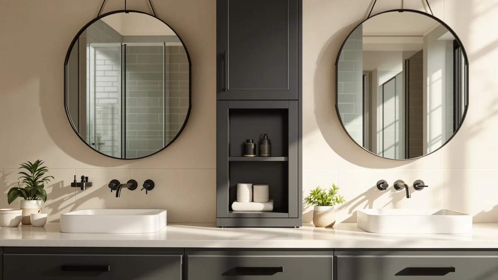

Quick Answer
The Iwell Storage Cabinet Rattan Cabinet is a 23.6-inch-wide particle board tower with a woven rattan door and three adjustable shelves, built wider than most narrow bathroom towers at a similar price. At $93.99, it holds up well against the slimmer VASAGLE and Homhedy alternatives if floor space isn't your main constraint and you want a decor-forward front over a plain panel door.
Our pick: Iwell Storage Cabinet Rattan Cabinet, $93.99 Check Price on Amazon
Things to Know Before You Buy
- The Iwell Storage Cabinet Rattan Cabinet is built from particle board with a woven rattan front door, a decor-forward look next to the plain MDF panels on most of the bathroom storage cabinets we cover.
- At 23.6 inches wide, it is roughly twice as wide as the 11.8-inch VASAGLE and Homhedy alternatives in this comparison, so it needs more floor space to clear a toilet or vanity.
- Three adjustable shelves split the interior, and the manufacturer rates the load capacity at 34 lb on top and 27 lb on each shelf and the bottom board.
- Pricing across this comparison ranges from $89.99 to $93.99, a gap of only $4 between the cheapest alternative and the Iwell itself.
- None of the four cabinets in this review have verified owner reviews published yet, so each durability and load claim here traces back to the manufacturer's own listing rather than a track record of buyer feedback.
This Iwell Storage Cabinet review looks at whether a wider, rattan-fronted tower earns its spot over the narrower bathroom cabinets that dominate this price range. Bathrooms rarely have floor space to spare, so most buyers default to the slimmest cabinet available, but a wider footprint can hold more per shelf if the room allows for it. At $93.99 and 23.6 inches wide with three adjustable shelves, the Iwell promises exactly that trade. We compared its build, dimensions and pricing against three rival cabinets to see whether the listing backs up what it claims for a bathroom that can spare the extra width.
Rattan-fronted cabinets solve a specific problem: you want closed storage that doubles as a decor piece instead of a plain MDF box. The Iwell Storage Cabinet Rattan Cabinet targets that gap directly, competing with the slimmer VASAGLE Tall Storage Cabinet with Lights, the barn-door Homhedy 67" H Tall Bathroom and the drawer-heavy VASAGLE Bathroom Floor Storage Cabinet, all covered later as alternatives. The materials and dimensions tell us where the Iwell's wider build pays off, and who should pick a narrower model instead.
Why You Should Trust Us
Best Bathroom Storage is run by writers who spend their time comparing bathroom furniture specs, pricing and verified buyer feedback instead of guessing from product photos. Ilane Tall, our home and bath expert, has covered dozens of storage cabinets, shelving towers and vanity organizers for this site, and she tracks how listed dimensions and materials hold up against what owners actually report once a cabinet has been in use for months. For this Iwell Storage Cabinet review, we cross-checked the manufacturer's listed measurements and load ratings against the VASAGLE and Homhedy alternatives, and we did not take the marketing copy at face value. We do not run a fake testing lab, and we do not claim to have installed any of the cabinets we cover. Instead, we dig through the current Amazon listings and compare specs line by line to catch when a description overstates what a product can realistically deliver.
Our Research Experience
We did not put the Iwell Storage Cabinet in a bathroom ourselves. Instead, we compared its listed specifications, material description and current Amazon price against three competing cabinets, and we weighed what the manufacturer's own measurements and feature list claim about the particle board build. The listing rates the load capacity at 34 lb on the top surface and 27 lb on each adjustable shelf and the bottom board, a common claim for mid-priced bathroom furniture, though manufacturer durability claims deserve some caution until a pattern of owner feedback confirms them. We lined that up against the raw dimensions and price of the VASAGLE and Homhedy alternatives to see where the Iwell earns its spot in this Iwell Storage Cabinet review and where a narrower build makes more sense for your bathroom.
Overview & Specs

Iwell Storage Cabinet Rattan Cabinet
What we like
- Three adjustable shelves let you reconfigure the interior as storage needs change
- 23.6-inch width stores more per shelf than the narrower VASAGLE and Homhedy alternatives
- Rated by the manufacturer to hold 34 lb on top and 27 lb per shelf and the bottom board
- Woven rattan front doubles as decor in a bathroom where a plain panel door would stand out
Flaws but not dealbreakers
- No verified owner reviews yet to confirm how the particle board holds up in bathroom humidity
- Decorative rattan panels are less rugged than the metal or MDF used on some alternatives
- At 23.6 inches wide, it needs more floor space than the two 11.8-inch-wide alternatives
| Material | Metal / wood |
| Size | 23.6"W |
The Iwell Storage Cabinet Rattan Cabinet is built around a particle board frame with a woven rattan door, a decor-forward alternative to the plain metal or MDF panels common on narrower towers. At 23.6 inches wide, it clears more width than a standard 11.8-inch cabinet, which lets each of the three adjustable shelves hold more than the slimmer alternatives below can manage. That footprint gives it the widest profile in this comparison, closer to a buffet cabinet than a narrow bathroom tower.
The manufacturer rates the top surface to hold up to 34 lb and each adjustable shelf and the bottom board to hold 27 lb, a load claim worth taking seriously given how often particle board sags in a humid bathroom under uneven weight. Three adjustable shelves let you split the cabinet between a taller open section and tighter concealed storage, which suits anyone who wants to store both bulky and small items in the same footprint. At $93.99, it lands at the top of the price range covered in this Iwell Storage Cabinet review, a few dollars above the three narrower alternatives despite offering more width per shelf.
What We Liked
Width is the clearest strength in this Iwell Storage Cabinet review. At 23.6 inches, it holds more per shelf than the 11.8-inch VASAGLE and Homhedy alternatives, and the manufacturer backs that up with a stated load rating of 34 lb on top and 27 lb per shelf that should cover towels, toiletries and small appliances without sagging. The rattan front is the other clear advantage: it reads as a decor piece rather than a utilitarian box, which matters in a bathroom where most storage cabinets default to plain MDF panels. Pricing also compares reasonably. At $93.99, it sits only a few dollars above the three narrower alternatives, despite offering noticeably more shelf capacity.
What Could Be Better
Footprint is the main trade-off in this Iwell Storage Cabinet review. At 23.6 inches wide, it needs nearly twice the floor space of the VASAGLE or Homhedy alternatives, and anyone working with a tight gap beside a toilet or vanity should measure carefully before buying. Particle board is also a softer material than the bamboo or MDF used in some competing builds, so the stated load ratings deserve some skepticism until owners confirm them under real bathroom humidity. There is no verified owner feedback on this specific listing yet, which means the weight capacity and durability claims come from the manufacturer alone.
Woven rattan also scratches and dents more easily than a solid metal or wood panel, something worth considering if you have young kids or expect the cabinet to take daily bumps. None of this changes the core appeal of the design, but know it going in if you want the finish to still look new after a year.
Who Is It For?
The Iwell Storage Cabinet Rattan Cabinet fits a household with a bathroom that has width to spare and wants a single cabinet to double as decor. Its 23.6-inch footprint makes it a strong pick for a stretch of open wall, a wide alcove, or a laundry-adjacent bathroom that needs real shelf capacity rather than a narrow gap filler. It is not the right choice if your bathroom only has an 11 or 12-inch slot to work with. In that case, the slimmer VASAGLE or Homhedy models covered below make better use of the space for roughly the same price.
Renters and apartment dwellers also stand to benefit, since the cabinet is freestanding and does not require drilling into a wall. Anyone drawn to a rattan or natural-fiber look will notice the difference between this front and the plain MDF panels on most competing cabinets at this price. A household with a narrow bathroom, on the other hand, will likely find the VASAGLE's slim 11.8-inch frame or the Homhedy's barn-door layout more practical.
Alternatives to Consider
If the Iwell's 23.6-inch width doesn't match what your bathroom needs, these three alternatives cover the most common trade-offs in this Iwell Storage Cabinet review: a slim lighted tower from VASAGLE, a barn-door cabinet from Homhedy, and a drawer-heavy floor cabinet from VASAGLE's SOFIE collection. Each one trades the Iwell's width for a narrower footprint or a different storage style, so match your own measurements before picking between them.

Best Value
VASAGLE Tall Storage Cabinet with
An 11.8-by-11.8-inch slim tower with a door-activated light strip and reversible left or right door setup, built for narrow gaps the wider Iwell can't fit into.
$89.99
Check Price on Amazon
Best Value
Homhedy 67" H Tall Bathroom
Two reversible barn doors and a drawer on an 11.8-inch-wide, 67-inch-tall frame, a better fit if you want closed storage plus a dedicated drawer for small items.
$89.99
Check Price on Amazon
Best Value
VASAGLE Bathroom Floor Storage Cabinet
Four drawers plus one door on a compact 13.8-by-25.6-inch footprint, suited to anyone who wants more small-item organization than the Iwell's open shelves provide.
$89.99
Check Price on AmazonFrequently Asked Questions
Is the Iwell Storage Cabinet sturdy enough for a bathroom?
The manufacturer rates the particle board frame to hold 34 lb on the top surface and 27 lb on each of the adjustable shelves and the bottom board. No verified owner reviews are available yet on this listing, so treat that load rating as a manufacturer spec until buyer feedback builds up around it.
How does the Iwell Storage Cabinet compare to the VASAGLE and Homhedy alternatives?
At 23.6 inches wide, the Iwell is roughly twice as wide as the 11.8-inch VASAGLE and Homhedy cabinets, which trade footprint for height instead. Choose the Iwell if floor space isn't tight and you want a decor-forward rattan front, and pick one of the narrower alternatives if your bathroom only has a slim gap to fill.
Does the Iwell Storage Cabinet come assembled?
The listing describes a freestanding particle board cabinet with three adjustable shelves, shipped flat for home assembly like most furniture in this price range. This specific listing does not yet have verified owner feedback describing how long assembly takes.
Final Verdict
This Iwell Storage Cabinet review comes down to a straightforward trade-off: a wide rattan tower with real shelf capacity against three narrower alternatives that trade some of that width for a smaller footprint or closed-drawer storage. For a bathroom with wall space to spare, the Iwell is the practical pick, and its rattan front gives it a decor edge over the plain panels on most cabinets at a similar price. If your bathroom only has a narrow slot to fill, the VASAGLE or Homhedy alternatives covered above make better use of it. Either way, Iwell is the brand worth starting with if width and shelf capacity matter more than a slim footprint.